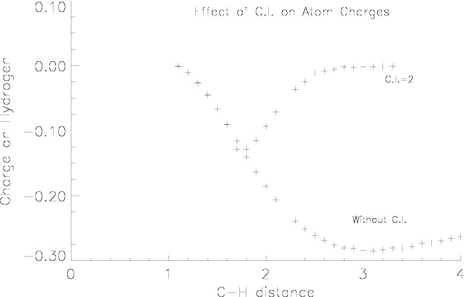

Next: Sparkles Up: Miscellaneous Topics in Previous: Causes of failure


Next: Sparkles Up: Miscellaneous Topics in Previous: Causes of failure
Although closed-shell methods are suitable for normal systems, when a reaction occurs such that a bond makes or breaks, then configuration interaction can help in the description of the system.
Consider CH2O, with the interatomic distance between carbon and one of the hydrogen atoms being steadily increased. At first the covalent bond will be strong, and a self-consistent field is readily obtained. Gradually the bond will become more ionic, and if configuration interaction is not used, a highly strained system will result. This exotic system will still have a large C-H bond order, despite the fact that the C-H distance is very large.
To a degree, configuration interaction can correct this picture. When C.I.=2 is used, Figure 1 and Figure 2, a more realistic description of the dissociation is obtained. Now the leaving hydrogen atom becomes neutral as the distance increases, and the energy becomes constant at large distances. A C-H bond in formaldehyde is being stretched. The effect of C.I. is to make the dissociated state more realistic. Without C.I., the energy rises continuously, and the charge on the departing hydrogen atom becomes unrealistic.
Figure 2:
Effect of C.I. on the charge in a bond-breaking reaction (for the reaction CH2O|
 |


Next: Sparkles Up: Miscellaneous Topics in Previous: Causes of failure